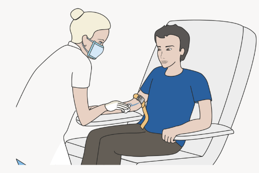

The Latest Health News and Blood Test Insights
Did you know that over 70% of medical decisions are based on blood test results? Regular blood tests can help detect early signs of conditions such as diabetes, heart disease, and vitamin deficiencies, allowing for timely intervention. We provide essential insights into what your results mean, trends in medical research, and tips for maintaining optimal health. Whether you're tracking cholesterol, blood sugar, or other key markers, our goal is to help you stay informed and take control of your health.
BLOOD IS THE SILENT MIRROR OF OUR HEALTH
